Stochastic Voronoi and Delaunay lattices#
Periodic lattices repeat one unit cell. Stochastic lattices start from a cloud of points instead, so their cells can vary naturally across a part. They are a good fit when you want irregular load paths, a gradual change in cell size, or a structure that should not show a repeating pattern.
This guide builds beam and plate lattices inside boxes, a cylinder, a sphere, and a box with an internal cavity. It also shows how to round member junctions for a more organic appearance and how to blend a finished lattice into a separate frame. It assumes you have completed Getting Started and Functional Grading.
The workflow#
Every stochastic example has three clear steps:
create and prepare a host shape,
sample seed points inside it, and
turn those points into Voronoi or Delaunay beams or plates.
import pyvcad as pv
import pyvcad_metamaterials as mm
host = pv.RectPrism(
pv.Vec3(0.0, 0.0, 0.0),
pv.Vec3(36.0, 22.0, 18.0),
)
host.prepare(pv.Vec3(0.4, 0.4, 0.4), 1.0)
points = mm.sample_points_in_host(
host,
spacing=6.0,
seed=12,
)
root = mm.voronoi_graph_lattice(
host,
points,
beam_thickness=0.9,
)
Point sampling is separate on purpose. You can inspect the points, save them,
or reuse the same distribution with several lattice types before making any
geometry. The host must be prepared before sample_points_in_host(...) because
the sampler asks the host whether each candidate point is inside.
Choose a family and a geometry form#
Voronoi and Delaunay describe two views of the same point distribution. The choice changes the paths that beams follow and the surfaces that plates occupy.
Builder |
What it creates |
A useful starting intuition |
|---|---|---|
|
Beams along Voronoi cell edges |
Open, irregular networks that often feel softer |
|
Beams derived from a tetrahedral connection network |
More direct connections that often feel stiffer |
|
Plates on the walls between Voronoi cells |
Foam-like closed or partly closed cells |
|
Plates on Delaunay tetrahedron faces |
Dense triangular internal bracing |
These descriptions are design intuition, not a substitute for simulation or testing. Thickness, point placement, boundary conditions, and material all have a large effect on the final behavior.
Grade cell size with point density#
Cell size is controlled before the lattice is built. spacing asks for a
local minimum distance between points. density describes a target number of
points per cubic millimetre. Use exactly one of them.
The first example uses a density field that rises from left to right across a 90 mm-long rectangular prism. The squared term keeps the left side sparse, then makes the point count rise more quickly toward the right:
point_density = pv.FloatAttribute(
"0.0006 + 0.0000048 * (x + 45) * (x + 45)"
).clamp(0.0006, 0.04)
points = mm.sample_points_in_host(
host,
density=point_density,
seed=12,
max_count=195,
relaxation=1,
boundary_clearance=0.5,
)
The point preview makes the field easier to read than the finished lattice. The left side has fewer points and larger gaps. The right side has more points and smaller gaps. The Voronoi cells inherit that change.
{kind=link}
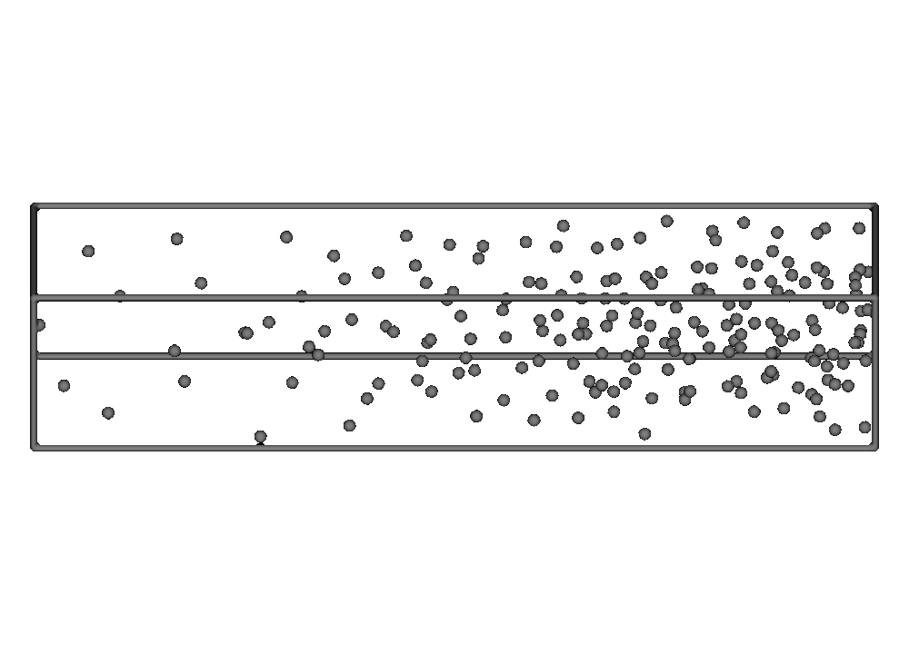
{kind=link}
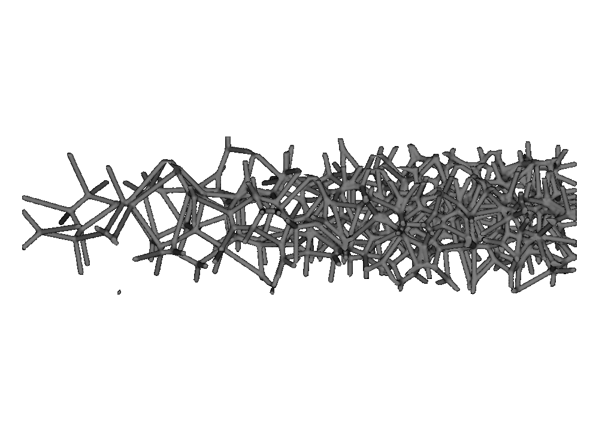
Run the full example:
01_voronoi_volume_lattice.py.
The sampling controls are useful when tuning a distribution:
seedmakes repeated runs deterministic. Keep it fixed while comparing lattice settings.max_countplaces a clear upper bound on the point count.relaxationapplies small spacing-preserving adjustments that reduce obvious clumps. One or two passes are usually enough.boundary_clearancekeeps seeds away from the host surface. It does not keep the finished beams or plates away from that surface.
A graded field can ask for a crowded region that cannot fit every requested
point. In that case the sampler returns the valid points it could place. Check
len(points) and the candidate_count and rejected_count metadata when
tuning a difficult host.
Compare Voronoi and Delaunay beams#
The next example places matching point distributions in two boxes. Voronoi is shown on the left and Delaunay mesh edges on the right.
voronoi = mm.voronoi_graph_lattice(
voronoi_host,
voronoi_points,
beam_thickness=0.8,
node_radius=0.55,
)
delaunay = mm.delaunay_graph_lattice(
delaunay_host,
delaunay_points,
beam_thickness=0.8,
node_radius=0.55,
mode="mesh_edges",
)
{kind=link}
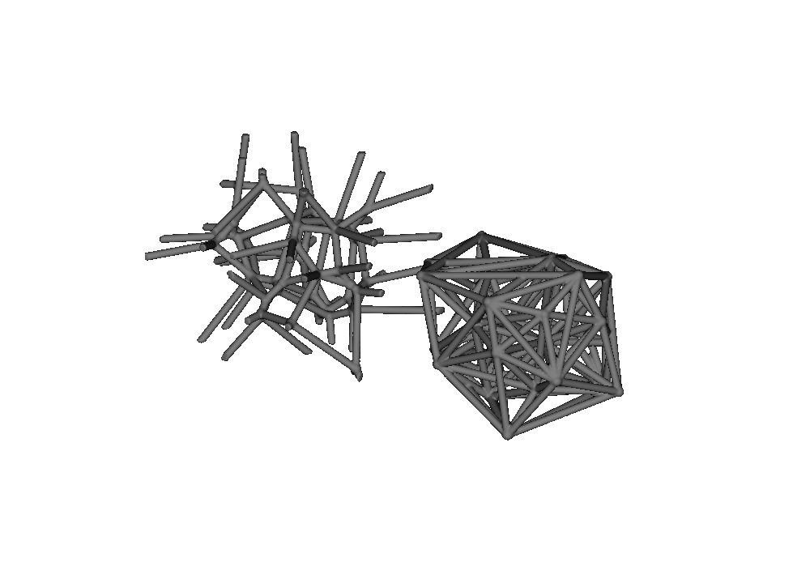
The Delaunay network contains more direct connections between the sampled
points. The Voronoi network follows the corners where cell walls meet. Reusing
a fixed seed makes this a meaningful visual comparison instead of comparing
two unrelated random structures.
Run
02_delaunay_and_voronoi_beams.py.
Three Delaunay graph modes#
delaunay_graph_lattice(...) provides three ways to turn the same
tetrahedralization into beams:
|
Beam path |
|---|---|
|
Connect neighboring seed points directly |
|
Connect each triangular face center to its three vertices |
|
Connect the centers of neighboring tetrahedra |
{kind=link}
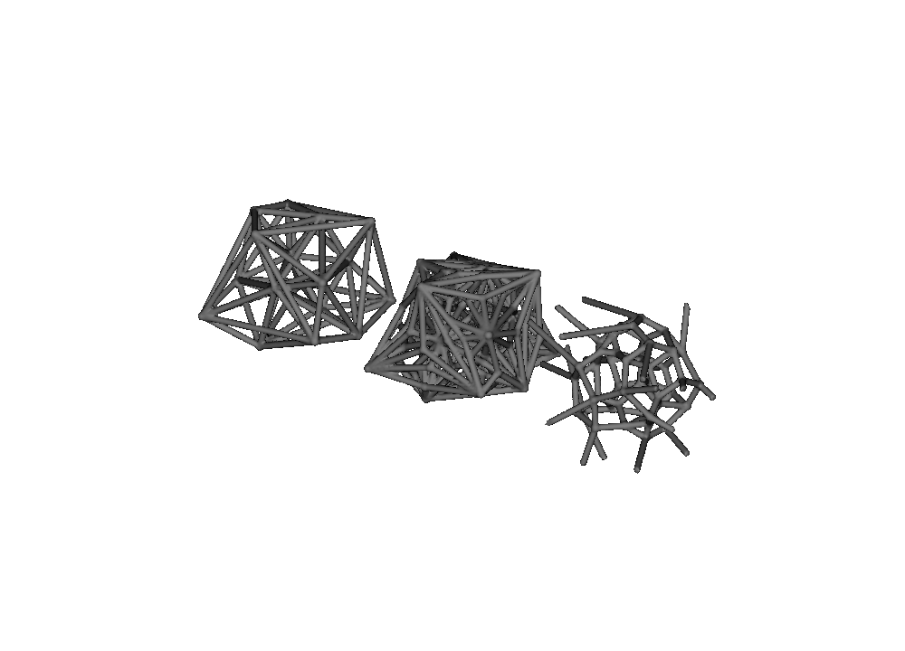
Run
07_delaunay_graph_modes.py
and keep the points fixed while switching modes.
Open and closed boundaries#
Both boundary modes keep the final implicit geometry inside the host. The difference is what the prepared lattice records at each cut:
boundary="open"clips the network and leaves its centerline topology open.boundary="closed"also records the caps or contact patches created where the structure meets the host.
The rendered solid is watertight in both cases. That is why an ordinary surface preview can look similar. Closed mode matters when you need to inspect or use the boundary closures later.
The boundary example uses a box with a spherical cavity. This makes members cross both an outside wall and an inside wall:
outer = pv.RectPrism(
pv.Vec3(14.0, 0.0, 0.0),
pv.Vec3(24.0, 20.0, 20.0),
)
cavity = pv.Sphere(pv.Vec3(14.0, 0.0, 0.0), 5.5)
host = pv.Difference(outer, cavity)
closed_lattice = mm.voronoi_graph_lattice(
host,
points,
beam_thickness=0.9,
boundary="closed",
)
{kind=link}
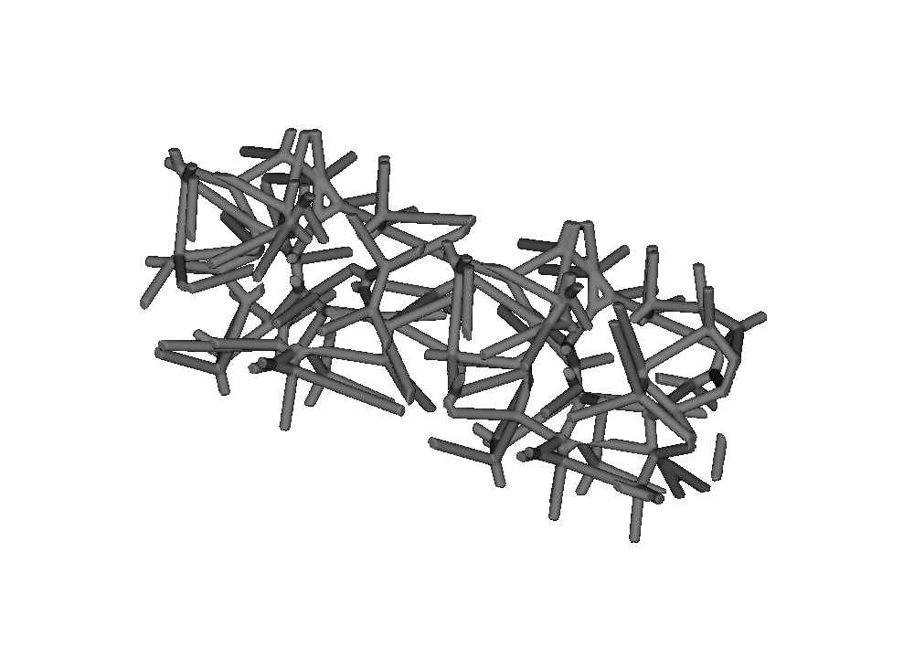
{kind=link}
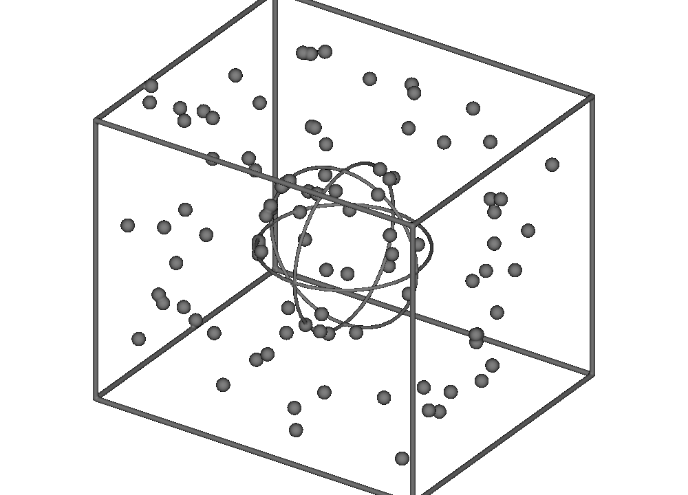
After preparation, inspect the boundary products directly:
closed_lattice.prepare(pv.Vec3(0.4, 0.4, 0.4), 1.0)
for cap in closed_lattice.boundary_caps():
print(cap.center, cap.radius, cap.edge_id)
Grade beam thickness and joint size#
Point density controls topology. beam_thickness and node_radius control the
solid geometry around that topology. They can be numbers or FloatAttribute
fields.
This Delaunay example uses a cylindrical host. Both fields grow along Z, so the bottom is fine and the top is heavy:
beam_thickness = pv.FloatAttribute(
"0.55 + 0.035 * (z + 14)"
).clamp(0.55, 1.55)
node_radius = pv.FloatAttribute(
"0.42 + 0.03 * (z + 14)"
).clamp(0.42, 1.28)
root = mm.delaunay_graph_lattice(
host,
points,
beam_thickness=beam_thickness,
node_radius=node_radius,
mode="mesh_edges",
boundary="closed",
)
{kind=link}
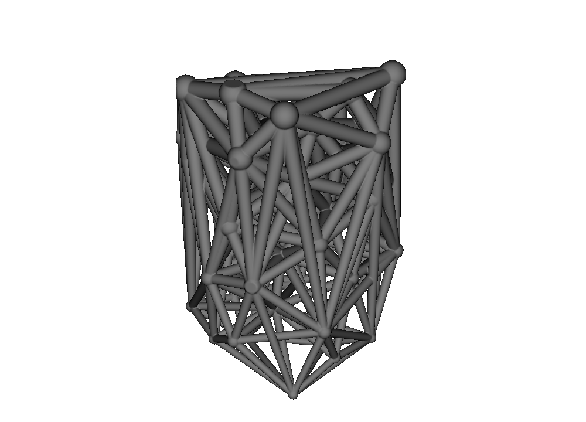
Run
04_graded_delaunay_cylinder.py.
Keep thickness fields positive everywhere they may be sampled. A bounded
expression such as .clamp(minimum, maximum) makes that intent explicit.
Round strut junctions with member blending#
Each graph member already has a round cross-section. With the default
member_blend_radius=0.0, distinct struts and optional joint spheres meet with
a sharp implicit union. A positive blend radius replaces that crease with a
smooth, locally thickened junction.
root = mm.voronoi_graph_lattice(
host,
points,
beam_thickness=1.0,
boundary="open",
member_blend_radius=0.4,
)
The radius is measured in millimetres. It acts between distinct members; it
does not blur the free span of a strut, and the host still confines the final
solid. The three renders below use the same 76 points in an 84 × 24 × 18 mm
host. Only member_blend_radius changes.
{kind=link}
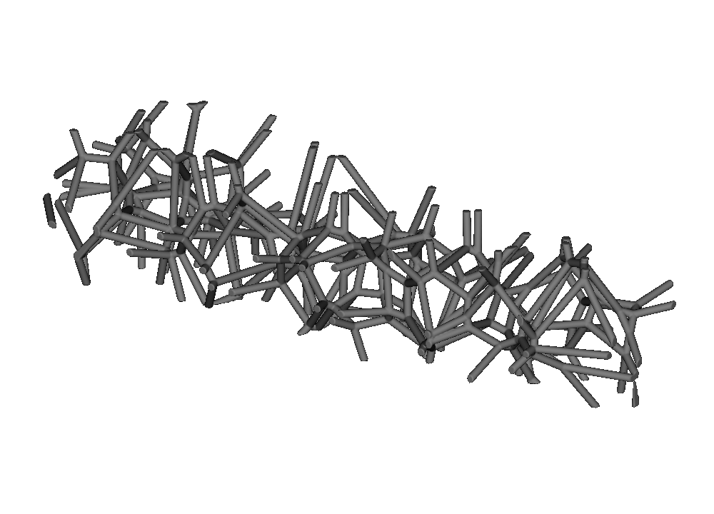
0.0 mm: sharp member union{kind=link}
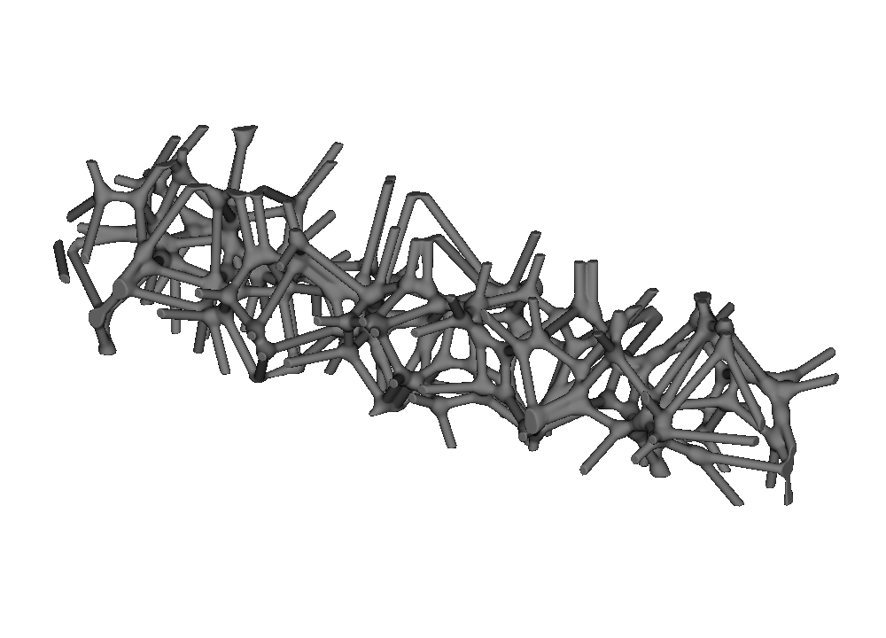
0.2 mm: restrained junction rounding{kind=link}
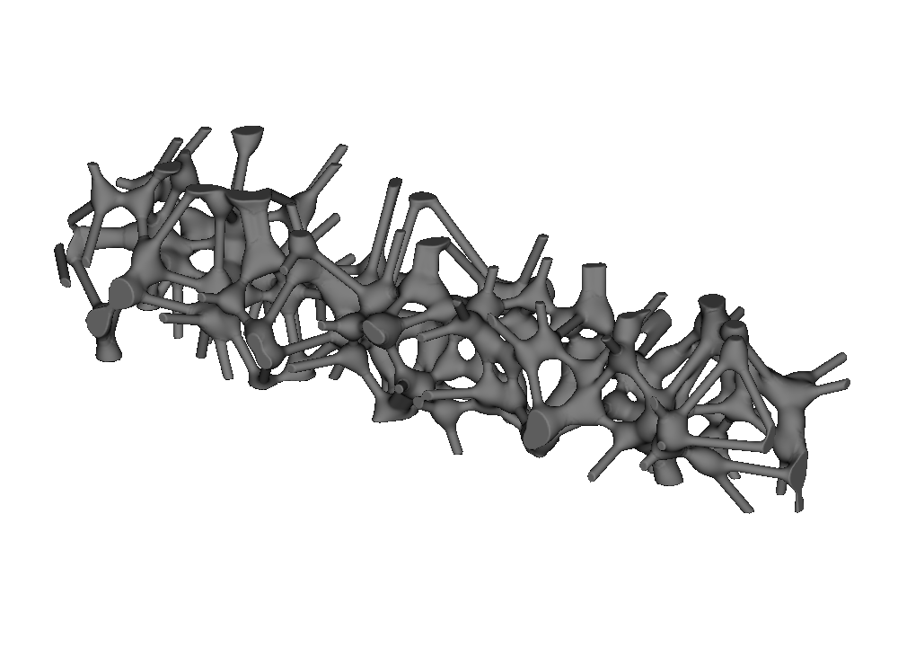
0.4 mm: pronounced organic junctionsRun
08_organic_voronoi_beams.py.
node_radius and member_blend_radius are independent. node_radius adds an
explicit sphere at each graph vertex; member blending rounds whatever distinct
struts and joint spheres already meet there. Start with a blend radius smaller
than the beam thickness, then increase it while checking minimum pore size and
material usage. A large value can bridge members that were intended to remain
separate.
Build stochastic plate lattices#
Plate lattices use the same points and hosts as beam lattices. The difference is that the result thickens faces instead of edges.
delaunay_plates = mm.delaunay_plate_lattice(
delaunay_host,
delaunay_points,
wall_thickness=0.5,
boundary="open",
)
voronoi_plates = mm.voronoi_plate_lattice(
voronoi_host,
voronoi_points,
wall_thickness=0.5,
boundary="open",
)
The cutaway below is important: without it, the outside plates hide much of the internal structure. Delaunay plates are shown on the left; Voronoi cell walls are shown on the right.
{kind=link}
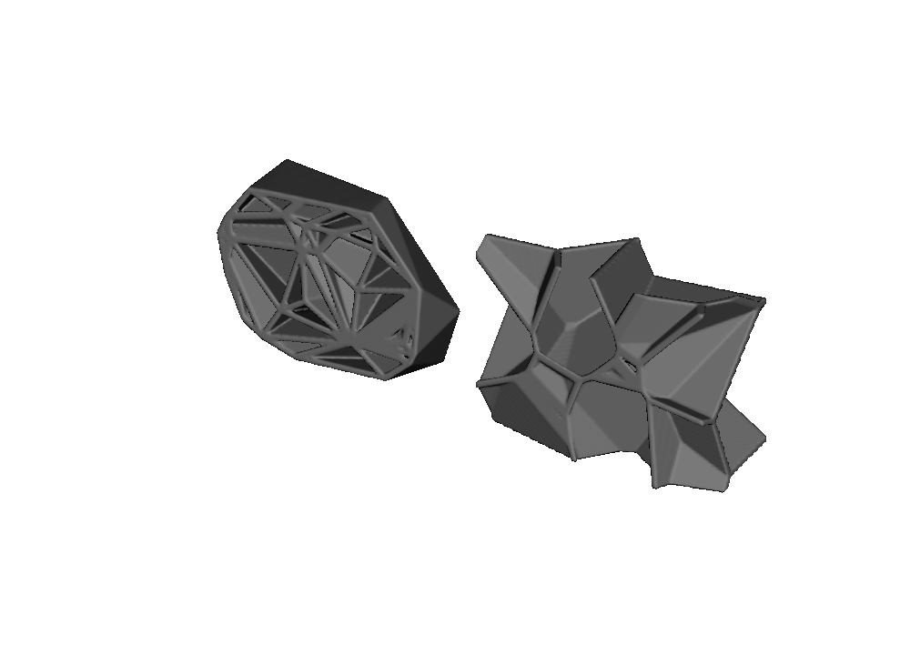
Run
05_delaunay_and_voronoi_plates.py.
Plate lattices can form enclosed pockets. Consider trapped powder, resin, or support material before using a closed-cell design for manufacturing.
Round plate intersections#
The same parameter works on face-based lattices. Here it blends distinct Voronoi cell-wall plates while keeping all triangles that approximate one plate together as a single member. This prevents the blend amount from growing when one plate needs more evaluation triangles.
root = mm.voronoi_plate_lattice(
host,
points,
wall_thickness=0.6,
boundary="open",
member_blend_radius=0.28,
)
Drag the divider to compare the same porous plate network before and after member blending. It uses 56 relaxed points with a 6.2 mm spacing target inside a 78 × 24 × 18 mm host. The matched cutaway and camera expose the internal intersections without changing the point distribution.
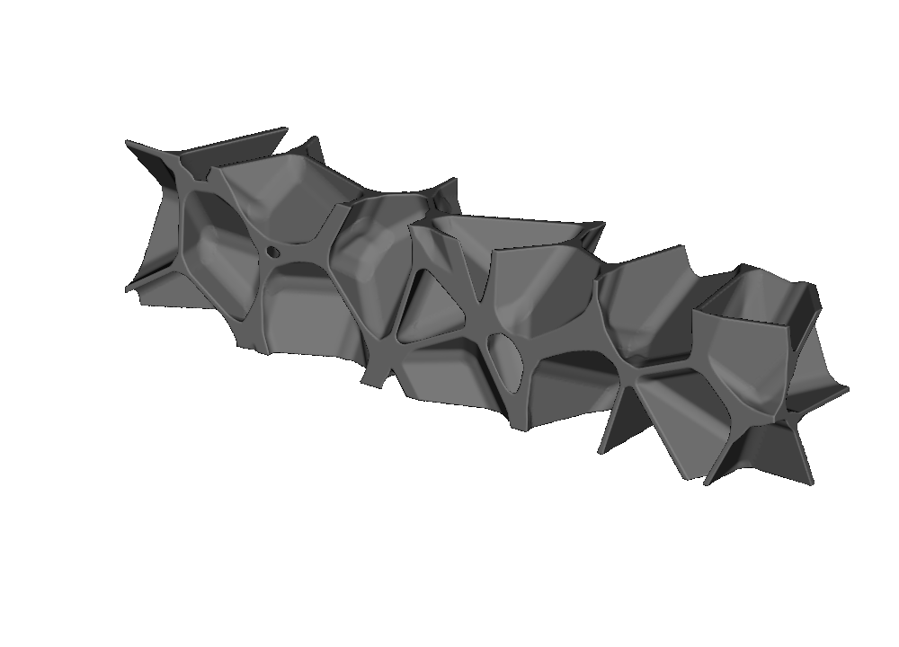
Sharp: 0.0 mm Organic: 0.28 mmVoronoi plates in a curved host#
A prepared OpenVCAD shape can be the host; it does not need to be a box. The last example places closed, gently graded Voronoi plates in a sphere:
root = mm.voronoi_plate_lattice(
host,
points,
wall_thickness=pv.FloatAttribute(
"0.42 + 0.015 * (z + 11)"
).clamp(0.42, 0.76),
boundary="closed",
)
{kind=link}
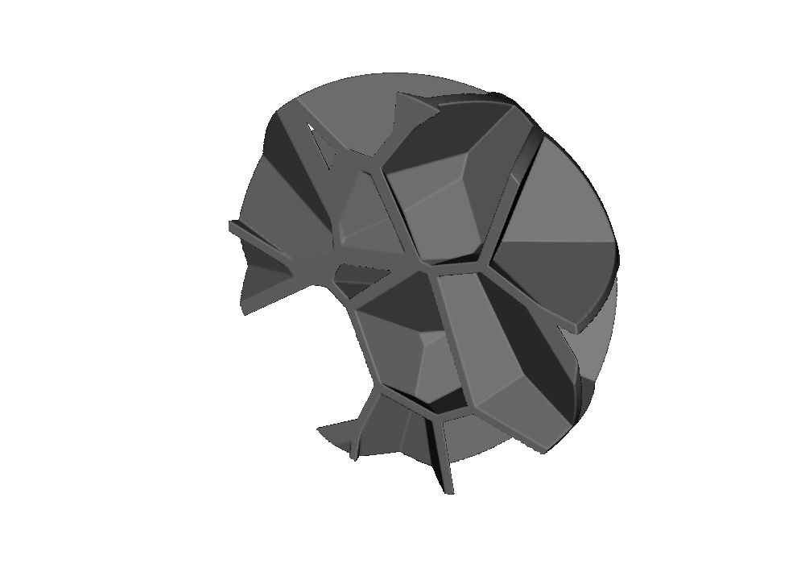
Run
06_voronoi_plates_in_sphere.py.
For closed plates, boundary_contact_patches() returns the approximate pieces
of host surface that close the plate solid. boundary_seams() returns their
edge segments. These are useful inspection products; the host remains the
authoritative boundary of the geometry.
Blend the finished lattice into a frame#
Member blending and Boolean blending solve different joins. First use
member_blend_radius to shape the lattice itself. Then use the existing
positive k on pv.Union to round the places where that completed lattice
meets a separate frame, shell, or rim:
lattice = mm.voronoi_graph_lattice(
host,
points,
beam_thickness=1.0,
member_blend_radius=0.4,
)
frame = box_frame(FRAME_SIZE, radius=1.35)
root = pv.Union(0.7, [frame, lattice])
Both renders below contain the same organically blended lattice, built from 80
relaxed points with a 6.0 mm spacing target inside the 90 × 24 × 18 mm frame.
The left side uses pv.Union(0.0, ...), so lattice-to-frame contacts remain
sharp. The right side changes only the Boolean union radius. Drag the divider
to inspect the rounded attachment regions along the outer rails.
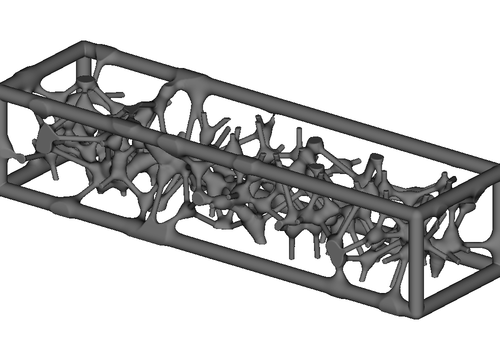
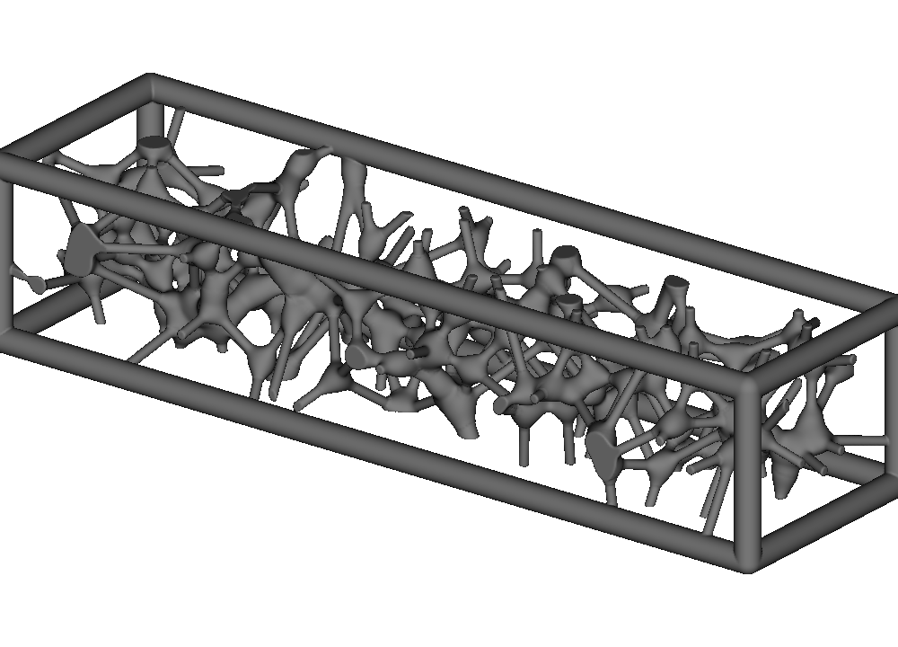
Sharp frame join Smooth frame joinRun
10_organic_lattice_frame.py.
Do not union the lattice with the fully solid host when the host represents the part envelope; that would fill the intended pores. Union it with the actual printable frame, shell, skin, or rim instead.
Inspect prepared topology#
The lattice nodes expose more than an SDF. After preparation you can inspect:
lattice.prepare(pv.Vec3(0.4, 0.4, 0.4), 1.0)
edges = lattice.tessellation_edges()
fragments = lattice.confined_edges()
delaunay_cells = lattice.delaunay_cells()
voronoi_cells = lattice.voronoi_cells()
for cell in voronoi_cells:
print(cell.seed_id, cell.equivalent_diameter)
Graph nodes provide edge and fragment products. Plate nodes provide
tessellation_faces() instead. Both provide Delaunay tetrahedra and bounded
Voronoi cells, including volume and diameter measurements.
Cells marked working_domain_truncated reach the finite construction boundary.
Their size describes the bounded working cell, not an infinite mathematical
cell. This is most common for seeds near the outside of the point cloud.
A practical starting checklist#
Start with a simple host and a constant spacing.
Keep
seedfixed while comparing families or modes.Render the points before judging a density gradient.
Add one graded control at a time: point density, beam thickness, node radius, or wall thickness.
Add
member_blend_radiusgradually and recheck pore size and unintended bridges.Use
boundary="open"unless you need explicit cap or contact products.Prepare and inspect counts before creating a very dense render.
Check closed plate designs for trapped material and inaccessible cavities.
Stochastic preparation does more work than tiling a small repeating cell. For interactive exploration, begin with a few dozen points and increase the count only after the family, boundary mode, and grading direction look right.